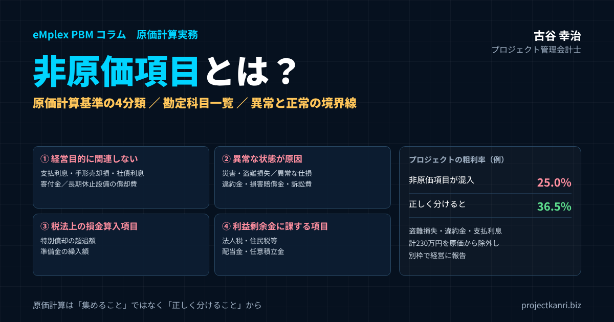

非原価項目とは？プロジェクト型ビジネスのための定義と算定基準―原価計算基準の4分類、非原価項目の勘定科目一覧、異常と正常の境界線、プロジェクト採算への影響と勘定科目マスタでの区分方法

結論：原価計算は「集めること」ではなく「正しく分けること」から始まる
この記事の要点
- 非原価項目とは：原価計算で原価に算入しない費用・損失。正常な経営活動の反復的な消費ではないもの
- 4分類：①経営目的に関連しない価値の減少 ②異常な状態を原因とする価値の減少 ③税法上特に認められている損金算入項目 ④その他の利益剰余金に課する項目
- 代表的な勘定科目：支払利息、寄付金、災害・盗難損失、違約金、損害賠償金、訴訟費用、固定資産売却損、法人税等
- 誤解に注意：固定資産税・印紙税などの租税公課や、販売費及び一般管理費は非原価項目ではない
- 境界線：反復性と予測可能性、金額と原因の異常性で判断し、社内ルールとして文書化
- 仕組み：勘定科目マスタで区分し、プロジェクト損益から自動除外、別枠で経営に報告
プロジェクト管理会計士の古谷です。「プロジェクトの利益率が思ったより低い」という相談を受けると、原価に本来含めるべきでない費用が紛れ込んでいるケースが少なくありません。多くの現場では、原価と費用の境界があいまいなまま、経費精算のついでにプロジェクトへ費用を付け替えてしまいます。
しかし、原価計算基準には「非原価項目」という明確な考え方があります。異常な損失や、営業外の費用まで原価に含めてしまうと、プロジェクトの実力が正しく見えなくなります。赤字に見えていたプロジェクトが実は黒字だった、ということも起こりえます。
本記事の結論は三つです。第一に、非原価項目とは、正常な経営活動の反復的な消費ではない費用や損失であり、原価計算基準はこれを4つに分類していることを理解すること。第二に、異常と正常の境界線を、反復性と予測可能性、金額と原因の異常性という基準で社内のルールとして文書化すること。第三に、その区分を担当者の都度の判断に委ねず、勘定科目のマスタの段階で区分し、プロジェクト別の損益の集計で機械的に分けられるようにすることです。以下、順に解説します。
非原価項目とは何か：「原価」と「費用」は同じではない
結論として、原価計算上、原価に算入すべきでない支出や損失を、非原価項目と呼びます。企業の総費用のうち、正常な経営活動から生じたものだけが原価であり、異常な状態から生じた損失や、経営活動そのものに関係のない支出は、原価に含めません。
原価計算基準は、原価の本質を、次のように整理しています。
| 要件 | 内容 | 満たさないものの例 |
|---|---|---|
| 経済価値の消費 | 財貨・用役の消費を貨幣価値で表したもの | — |
| 給付に転嫁される価値 | 製品や役務の提供にかかわらせて把握されたもの | 法人税等（利益に課されるもの） |
| 経営目的に関連 | 本業の製品・役務の提供に関連するもの | 支払利息、投資不動産の費用、寄付金 |
| 正常的なもの | 正常な状態のもとで発生するもの | 災害・盗難の損失、異常な仕損、違約金 |
原価とは、経営における一定の給付、つまり製品や役務の提供にかかわらせて把握された財貨や用役の消費を、貨幣の価値で表したものです。そして、原価は経営の目的に関連したものであり、正常なものでなければなりません。この四つの要件のいずれかを満たさないものが、非原価項目です。
たとえば、火災による損失、盗難による損失、支払利息などの財務費用、法人税や住民税といった税金は、いずれも非原価項目にあたります。火災や盗難は正常なものではなく、支払利息は製品や役務の提供ではなく資金の調達という財務活動にかかわるものであり、法人税等は利益に課されるもので、給付の提供のための消費ではないからです。
プロジェクト型ビジネスでは、これらを誤って個別のプロジェクトの原価に配賦してしまうと、採算の管理そのものの信頼性が崩れてしまいます。非原価項目の理解は、プロジェクト別の原価計算の出発点なのです。
原価計算基準とは：いまも実務の拠りどころ
非原価項目の考え方の根拠となる原価計算基準は、1962年に企業会計審議会が中間報告として公表したものです。公表から半世紀以上が経ちますが、日本の原価計算の実務の基本的な拠りどころとして、いまも広く参照されています。
原価計算基準は、製造業を主な対象として作られたものですが、原価の本質や非原価項目の考え方は、建設、システム開発、コンサルティング、映像制作といったプロジェクト型ビジネスにもそのまま当てはまります。プロジェクト型ビジネスにおける役務の提供は、原価計算基準でいう給付にあたり、プロジェクトの原価は、その給付のための経済価値の消費として捉えることができるからです。
一方で、原価計算基準が作られた時代から、会計の制度は大きく変わりました。先ほど触れた役員賞与の扱いのように、現在の会計基準と考え方が異なる部分もあります。原価計算基準の考え方を土台にしつつ、現在の会計基準や自社の業務の実態に合わせて、社内のルールを作ることが大切です。
原価計算基準は、法令ではなく、企業会計の慣行の中から一般に公正妥当と認められるところを要約したものとされています。そのため、すべての会社に同じ処理を義務づけるものではありませんが、原価の範囲を考えるうえでの共通の言葉として、監査法人や税理士との対話でも役立ちます。
製造原価・販売費及び一般管理費・非原価項目の関係
非原価項目を正しく理解するために、もう一つ押さえておきたいのが、原価の範囲です。原価計算基準でいう原価には、製品や役務を生み出すための製造原価だけでなく、販売費と一般管理費も含まれます。製造原価に販売費と一般管理費を加えたものを、総原価と呼びます。
| 区分 | 原価計算基準での位置づけ | プロジェクト型ビジネスの例 | 損益計算書の主な表示 |
|---|---|---|---|
| プロジェクトの原価（製造原価） | 原価 | 工数の労務費、外注費、プロジェクトの直接経費 | 売上原価 |
| 販売費及び一般管理費 | 原価（総原価の一部） | 営業部門・管理部門の費用、本社家賃 | 販売費及び一般管理費 |
| 非原価項目 | 原価ではない | 支払利息、災害損失、違約金、法人税等 | 営業外費用・特別損失・法人税等（寄付金は販管費に表示されることが多い） |
つまり、販売費及び一般管理費は、プロジェクトの原価ではありませんが、原価計算基準の上では原価の一部です。一方で、非原価項目は、製造原価にも、販売費及び一般管理費にも含まれません。プロジェクト型ビジネスで費用を分類するときは、プロジェクトの原価、販売費及び一般管理費、非原価項目の三つに分けて考えると整理しやすくなります。
損益計算書との関係で言えば、非原価項目の多くは、営業外費用や特別損失、法人税等として、営業利益より下に表示されます。ただし、寄付金のように、損益計算書では販売費及び一般管理費の中に表示されることが多い一方で、原価計算基準の上では非原価項目とされるものもあります。損益計算書の表示の区分と、原価計算の上の区分は、必ずしも一致しない点に注意が必要です。
プロジェクト型ビジネスでよく使われる粗利という指標は、売上からプロジェクトの原価を引いたものです。粗利の段階で非原価項目が混ざると、プロジェクトの実力の評価が歪み、販売費及び一般管理費が混ざると、プロジェクトの間の比較が難しくなります。三つの区分を守ることで、粗利は、プロジェクトの実力を測る正しい物差しになります。
原価計算基準が定める非原価項目の4分類
原価計算基準は、非原価項目を、次の4つに分類しています。
| 分類 | 主な項目 |
|---|---|
| 1. 経営目的に関連しない価値の減少 | 投資資産（不動産・有価証券・貸付金）の減価償却費・管理費・租税、未稼働の固定資産や長期休止設備の減価償却費・管理費、支払利息・割引料・社債利息・社債発行費償却などの財務費用、寄付金 |
| 2. 異常な状態を原因とする価値の減少 | 異常な仕損・減損・棚卸減耗、火災・震災・風水害・盗難・争議などの偶発的事故による損失、延滞償金・違約金・罰課金・損害賠償金、偶発債務損失、訴訟費、臨時多額の退職手当、固定資産売却損・除却損、異常な貸倒損失 |
| 3. 税法上特に認められている損金算入項目 | 租税特別措置法による特別償却など通常の償却範囲額を超える額、準備金の繰入額 |
| 4. その他の利益剰余金に課する項目 | 法人税・住民税などの法人税等、配当金、任意積立金繰入額、役員賞与金（現行の会計基準では費用処理） |
原価計算基準 五の内容を要約したものです。
この4分類は、原価計算を学ぶ人には馴染みのあるものですが、実務の現場では、細かな項目までは意識されていないことが多いのが実情です。以下、それぞれの分類を、プロジェクト型ビジネスの実務に引きつけて解説します。
分類1：経営目的に関連しない価値の減少
一つ目の分類は、経営の目的に関連しない価値の減少です。会社の本業である製品や役務の提供とは関係のない資産や活動から生じる費用が、これにあたります。
代表的なのは、投資のための不動産や有価証券、貸付金にかかる減価償却費や管理費、税金です。本業で使っていない不動産の費用を、プロジェクトの原価に含めるべきでないことは、直感的にも分かりやすいでしょう。
未稼働の固定資産や、長期にわたって休止している設備にかかる減価償却費や管理費も、この分類に含まれます。プロジェクト型ビジネスでいえば、長期間使われずに保管されている撮影の機材や建設の機械の減価償却費が、これにあたる可能性があります。ただし、短期間の待機や、繁閑による一時的な未使用は、正常な範囲として原価に含めることが一般的です。どこからを長期の休止とみなすかは、社内の基準で決めておく必要があります。
そして、プロジェクト型ビジネスで特に注意したいのが、支払利息、手形の割引料、社債の利息、社債発行費の償却などの財務費用です。プロジェクトのために借り入れた資金の利息であっても、それは資金の調達という財務活動の費用であり、プロジェクトの役務の提供のための消費ではありません。寄付金も、この分類に含まれます。
長期の休止の設備と同じように、プロジェクト型ビジネスでは、使われていない社内のシステムや、利用を停止した拠点の費用なども、この分類の考え方で整理できます。事業に使われていない資産の費用を、稼働しているプロジェクトに負担させないことが原則です。
分類2：異常な状態を原因とする価値の減少
二つ目の分類は、異常な状態を原因とする価値の減少です。正常な経営活動の中では起こらないはずの出来事によって生じた損失が、これにあたります。
具体的には、異常な仕損、減損、棚卸の減耗、火災や地震、風水害、盗難、労働争議などの偶発的な事故による損失、延滞の償金、違約金、罰課金、損害賠償金、偶発債務による損失、訴訟の費用、臨時で多額の退職手当、固定資産の売却損や除却損、異常な貸倒損失などが挙げられています。
プロジェクト型ビジネスで発生しやすいのは、機材の盗難や災害による損壊の損失、契約の解除に伴う違約金、顧客や第三者への損害賠償金、紛争に伴う訴訟の費用などです。これらは、プロジェクトの現場で発生し、そのプロジェクトのために使われたように見えるため、プロジェクトの原価に紛れ込みやすい項目です。
ここで大切なのは、異常かどうかという判断です。通常の作業の中で一定の割合で発生する手直しや仕損は、正常な原価に含めます。正常と異常の境界をどう引くかについては、後の章で詳しく解説します。
なお、請負の契約で、納期の遅れなどにより顧客に支払う遅延損害金などは、契約の内容によっては、収益認識の会計基準のもとで売上の減額として扱うべきかを検討する必要があることもあります。会計の処理の詳細は、監査法人や会計の専門家に確認してください。
異常な状態を原因とする損失の中には、臨時で多額の退職手当のように、プロジェクトの現場とは直接関係のないものも含まれます。組織の再編に伴う臨時の費用なども、この分類の考え方で判断します。
分類3：税法上特に認められている損金算入項目
三つ目の分類は、税法の上で特に認められている損金算入の項目です。税法の政策的な目的から、通常の範囲を超えて損金に算入することが認められているものです。
代表的なのは、租税特別措置法による特別償却など、通常の償却の範囲の額を超える償却額や、税法上の準備金の繰入額です。これらは、税金の計算の上では損金になりますが、経営活動のための正常な消費とは言えないため、原価には含めません。
プロジェクト型ビジネスで、設備に特別償却を適用している場合、プロジェクトの原価に含める減価償却費は、通常の償却の範囲の額にとどめ、特別償却の部分は原価から除くのが、原価計算基準の考え方です。
特別償却は、設備投資を促すための税制上の措置であり、その分だけ設備の価値が早く減っているわけではありません。原価計算では、設備の実際の使用の実態に合った通常の償却の範囲の額を原価とし、税制上の上乗せの部分は除くことで、プロジェクトの原価を実態に近づけます。
分類4：その他の利益剰余金に課する項目
四つ目の分類は、その他の利益剰余金に課する項目です。利益の処分や、利益に対して課されるものが、これにあたります。
代表的なのは、法人税、住民税などの法人税等と、配当金、任意積立金の繰入額です。法人税等は、会計の上では費用として計上されますが、利益に対して課されるものであり、製品や役務の提供のための消費ではないため、原価には含めません。
なお、原価計算基準では、役員賞与金もこの分類に挙げられています。ただし、現在の会計基準では、役員賞与は発生した期間の費用として処理されるため、実務上は一般管理費などとして扱われることが多くなっています。原価計算基準が作られた時代と、現在の会計の制度との違いがあることも、理解しておきましょう。
配当金や任意積立金の繰入額は、そもそもプロジェクトの伝票として入力されることはありませんが、全社の損益や予算の資料を作るときに、原価や費用と混同しないよう整理しておきましょう。
税務上の損金と原価の違い
非原価項目について考えるとき、税務の上の損金との違いも整理しておきましょう。原価計算の上で非原価項目となる費用でも、税務の上では損金に算入できるものが多くあります。支払利息、災害による損失、固定資産の除却損などは、一般に損金になります。
つまり、非原価項目とは、税金の計算で費用として認められないもの、という意味ではありません。原価計算の目的、すなわち製品や役務の提供にかかった価値の消費を正しく測るという目的から、原価に含めないもの、という意味です。原価計算と税務の計算は、それぞれ別の目的を持っています。
逆に、税務の上では損金に算入できない費用、たとえば交際費の一部なども、原価計算の上では、経営の目的に関連した正常な消費であれば、原価や販売費及び一般管理費として扱うことがあります。原価計算の上の区分と、税務の上の区分を混同しないことが大切です。具体的な税務の取り扱いは、税理士に確認してください。
原価計算と税務の区分を対応させた一覧を作っておくと、決算や税務申告の際の確認の手間も大きく減ります。
よくある誤解：租税公課・寄付金・役員報酬は非原価項目か
非原価項目について、実務の現場でよく見かける誤解を整理しておきます。
| 誤解 | 正しい理解 |
|---|---|
| 租税公課はすべて非原価項目 | 非原価は法人税・住民税など。固定資産税・印紙税などは原価または販管費 |
| 販管費は非原価項目 | 原価計算基準では販管費も総原価の一部。非原価項目ではない |
| プロジェクトのために使った費用はすべてプロジェクト原価 | 支払利息・盗難損失・違約金などは関係していても非原価項目 |
| 役員賞与は非原価項目 | 原価計算基準では非原価に挙げられているが、現行の会計基準では費用処理され、一般管理費などとして扱われることが多い |
一つ目の誤解は、租税公課はすべて非原価項目だ、というものです。非原価項目となるのは、法人税、住民税などの利益に課される税金です。一方で、勘定科目の租税公課には、固定資産税、自動車税、印紙税など、事業の活動に伴って発生する税金も含まれます。これらは、非原価項目ではなく、原価、あるいは販売費及び一般管理費として扱います。たとえば、プロジェクトの契約書の印紙税は、そのプロジェクトの経費として扱うことができます。
二つ目の誤解は、販売費及び一般管理費は非原価項目だ、というものです。先ほど見たように、原価計算基準の上では、販売費と一般管理費は総原価の一部です。プロジェクトの原価には含めませんが、非原価項目ではありません。
三つ目の誤解は、プロジェクトのために使った費用は、すべてプロジェクトの原価だ、というものです。プロジェクトのために借りた資金の利息、プロジェクトの現場で起きた盗難の損失、プロジェクトの契約の解除による違約金は、そのプロジェクトに関係して発生したものですが、原価計算の上では非原価項目です。関係しているかどうかではなく、正常な役務の提供のための消費かどうかで判断します。
こうした誤解は、経理の担当者だけでなく、プロジェクトマネージャーや経営者の間にも広く見られます。社内の研修や、ルールの文書の中で、具体的な例を挙げて説明しておくと効果的です。
非原価項目の勘定科目一覧
非原価項目を実務で正しく扱うには、自社の勘定科目に当てはめて整理しておくことが欠かせません。代表的な勘定科目と、その扱いを一覧にしました。
| 勘定科目 | 原価計算上の扱い | 分類 | 損益計算書の主な表示 |
|---|---|---|---|
| 支払利息・社債利息 | 非原価項目 | 1（財務費用） | 営業外費用 |
| 手形売却損（割引料） | 非原価項目 | 1（財務費用） | 営業外費用 |
| 社債発行費償却 | 非原価項目 | 1（財務費用） | 営業外費用 |
| 寄付金 | 非原価項目 | 1 | 販売費及び一般管理費に表示されることが多い |
| 投資不動産の減価償却費 | 非原価項目 | 1 | 営業外費用など |
| 長期休止設備の減価償却費 | 非原価項目 | 1 | 営業外費用・特別損失など |
| 災害損失・盗難損失 | 非原価項目 | 2 | 特別損失 |
| 違約金・損害賠償金 | 非原価項目（請負の遅延損害金等は売上減額の検討も） | 2 | 特別損失・営業外費用 |
| 訴訟関連費用 | 非原価項目 | 2 | 特別損失・営業外費用 |
| 固定資産売却損・除却損（臨時） | 非原価項目 | 2 | 特別損失 |
| 貸倒損失（異常なもの） | 非原価項目 | 2 | 営業外費用・特別損失 |
| 特別償却の超過額 | 非原価項目 | 3 | — |
| 法人税・住民税及び事業税 | 非原価項目 | 4 | 法人税等 |
| 租税公課（固定資産税・印紙税など） | 原価または販管費 | — | 売上原価・販売費及び一般管理費 |
| 貸倒損失（通常の取引の範囲） | 販売費 | — | 販売費及び一般管理費 |
| 正常な仕損・手直し | 原価 | — | 売上原価 |
一般的な扱いの目安です。実際の処理は発生の原因と金額により判断し、監査法人・税理士にご確認ください。
この一覧は、一般的な扱いを示したものです。同じ勘定科目でも、発生の原因や金額によって、原価になる場合と非原価項目になる場合があります。たとえば、貸倒損失は、通常の取引の中で一定の割合で発生するものであれば、販売費として扱われますが、異常な貸倒損失は非原価項目です。固定資産の除却損も、通常の設備の更新に伴うものと、災害による臨時のものとでは扱いが異なります。
まずは、自社の勘定科目の一覧を開き、それぞれの科目が、プロジェクトの原価、販売費及び一般管理費、非原価項目のどれにあたるのかを棚卸しすることから始めてください。判断に迷う科目は、発生の原因によって分けるための補助の科目を設けることも検討しましょう。会計の処理の判断は、監査法人や税理士にも確認してください。
勘定科目の名称は会社によって異なります。自社で使っている科目の名称に置き換えて、一覧を作り直してみてください。
一覧に載っていない科目も、判定のフローの三つの問いに当てはめれば、多くは分類できます。
なぜプロジェクト型ビジネスほど原価と非原価の境界が崩れやすいのか
結論として、プロジェクトの単位で採算を追いかけるほど、担当者は「このプロジェクトのために使った」という感覚だけで、費用をプロジェクトのコードに紐付けてしまいがちです。
原価計算基準は、本来、正常な生産活動や役務の提供の活動に伴う消費の分だけを原価とする考え方です。しかし、現場では、特別損失や金融の費用まで含めて集計してしまうことが珍しくありません。プロジェクト用に借り入れた資金の支払利息や、契約の解除に伴う違約金、災害による設備の損壊の復旧の費用などが、原価の台帳に紛れ込むケースを何度も見てきました。こうした処理は、一見丁寧に見えても、プロジェクトの実力を測る指標を歪める原因になります。
| 費用 | 紛れ込む理由 | 正しい扱い |
|---|---|---|
| プロジェクト用借入の支払利息 | そのプロジェクトのための資金だから | 非原価（財務費用） |
| 契約解除に伴う違約金 | そのプロジェクトで発生したから | 非原価（異常な状態） |
| 災害による設備損壊の復旧費用 | 現場で発生したから | 非原価（偶発的事故） |
| 機材の盗難損失 | そのプロジェクトの機材だから | 非原価（偶発的事故） |
プロジェクト型ビジネスで境界が崩れやすい理由は、ほかにもあります。一つは、プロジェクトの現場に、経理の担当者がいないことです。現場の担当者が経費の精算や支払いの依頼の段階でプロジェクトのコードを付け、その時点で原価としての扱いが決まってしまいます。もう一つは、プロジェクトごとの責任の意識です。プロジェクトマネージャーは、自分のプロジェクトで起きたことは自分の責任だと考え、誠実にすべての費用をプロジェクトに載せようとします。その誠実さが、結果として数字を歪めてしまうのです。
さらに、プロジェクト型ビジネスでは、プロジェクトごとに取引の内容が異なり、毎回のように新しい種類の費用が発生します。製造業のように、同じ費用が同じ形で繰り返される業務とは違い、その都度の判断が必要になる場面が多いことも、境界が崩れやすい理由の一つです。
プロジェクト型ビジネスで発生しやすい非原価項目
結論として、プロジェクト型ビジネスで原価に紛れ込みやすい非原価項目には、大きく四つの類型があります。第一に、事故や重大な誤りなど異常な発生による異常な仕損の費用、第二に、台風や地震、盗難などの偶発的な事故による損失、第三に、支払利息などの財務活動に伴う費用、第四に、違約金や損害賠償金、訴訟の費用などの紛争に伴う費用です。
| 類型 | 例 | 原価計算基準の分類 |
|---|---|---|
| 異常な仕損 | 重大な設計ミスによる大規模な作り直し、事故による資材の大量損壊 | 2 |
| 偶発的な事故・災害の損失 | 台風・地震による現場の損壊、機材の盗難 | 2 |
| 財務費用 | プロジェクト用借入の支払利息、手形の割引料 | 1 |
| 紛争に伴う費用 | 違約金、損害賠償金、訴訟費用 | 2 |
これらは、いずれも、個別のプロジェクトが効率よく仕事をしたかを測る指標とは無関係です。原価計算基準の4分類と照らし合わせると、第一と第二と第四の類型は異常な状態を原因とする価値の減少に、第三の類型は経営目的に関連しない価値の減少にあたります。そして、法人税等は、そもそもプロジェクトに付けられることはほとんどありませんが、全社の損益を作るときに原価と混同しないよう注意が必要です。
まずは、この類型を自社の勘定科目に当てはめて棚卸しすることが出発点になります。過去一年間のプロジェクトの原価の明細を見直し、これらの類型にあたる費用が含まれていないかを確認してみてください。
四つの類型の中で、プロジェクト型ビジネスで最も金額が大きくなりやすいのは、紛争に伴う費用です。違約金や損害賠償金は、一件で数百万円から数千万円に及ぶこともあり、それがプロジェクトの原価に紛れ込めば、プロジェクトの採算の評価は一変します。
「異常」と「正常」の境界線はどこで引くべきか
結論として、境界線を引く基準は、反復性と予測可能性の二つです。毎期一定の水準で発生し、あらかじめ予算に織り込める費用は正常な原価として扱えますが、発生の頻度も金額も予測できない突発的な支出は、非原価項目として切り分けるべきです。
通常の作業の誤りによる手直しの費用は原価に含めてよい一方、想定を大きく超える規模の仕損や、係争による損害賠償金は、非原価項目に分類します。金額の基準と、発生の原因の異常性の両面から社内の基準を文書化しておくことで、感覚的な判断に頼らないルールになり、線引きのぶれを防げます。
| 基準 | 正常（原価） | 異常（非原価項目） |
|---|---|---|
| 反復性 | 毎期・プロジェクトごとに一定水準で発生 | 突発的で繰り返さない |
| 予測可能性 | 見積・予算に織り込める | 発生の頻度も金額も予測できない |
| 金額 | 社内基準の範囲内 | 一件あたり・原価比率が社内基準を超える |
| 原因 | 通常の業務の進め方の中で発生 | 事故・災害・紛争など通常の業務の外の出来事 |
反復性とは、同じ種類の費用が、毎期、あるいはプロジェクトごとに、一定の水準で繰り返し発生するかどうかです。予測可能性とは、その費用を、見積や予算の段階で見込むことができるかどうかです。この二つを満たす費用は、正常な原価として、見積と予算に織り込むべきものです。
金額の基準は、一件あたりの金額や、プロジェクトの売上や原価に対する比率で決めます。たとえば、一件あたり一定の金額を超え、かつ、過去の同じ種類のプロジェクトでは発生していない費用は、異常として扱う、といった基準です。原因の基準は、その費用が、通常の業務の進め方の中で起きたものか、事故や災害、紛争など、通常の業務の外の出来事によるものかで判断します。
どちらとも言えない費用は、必ず出てきます。そのときに、担当者が一人で判断するのではなく、経理の責任者に判断を仰ぐ手順を決めておきましょう。判断の結果と理由を記録しておけば、次に同じような費用が出たときの判断の基準になります。
基準の金額は、会社の規模や、プロジェクトの規模によって変わります。まずは仮の基準で運用を始め、一年ほどの事例を見たうえで見直すのが現実的です。
逆の誤りに注意：原価を非原価項目に逃がさない
非原価項目の切り分けで、もう一つ注意しなければならないのが、逆の誤りです。本来は正常な原価であるものを、非原価項目として切り分けてしまうことです。
プロジェクトの採算が悪化したとき、その原因となった費用を、異常な損失として特別損失に計上すれば、プロジェクトの粗利率は良く見えます。売上総利益や営業利益も良く見えるかもしれません。しかし、それが本当は見積の甘さや、通常の範囲の手戻りによるものであれば、その処理は、プロジェクトの実力を実態より良く見せることになります。
こうした処理が繰り返されると、プロジェクトの評価も、次の見積も、経営の判断も、すべて誤った前提の上に立つことになります。さらに、外部に開示する決算の数字であれば、利益の区分の表示の適正性の問題にもなりかねません。
だからこそ、非原価項目の判断の基準を事前に文書にし、基準を超える判断は経理の責任者が行い、その理由を記録しておくことが大切なのです。原価を非原価項目に逃がさないこと、非原価項目を原価に混ぜないこと。この両方を守ることが、原価計算の信頼性を支えます。
判断の記録は、後から振り返ったときに、なぜその費用を非原価項目としたのかを説明できる材料になります。監査の場面でも、判断の根拠を示せることが信頼につながります。
正常仕損と異常仕損：手直しの費用をどう扱うか
異常と正常の境界の考え方が最も分かりやすく表れるのが、仕損の扱いです。仕損とは、作業の失敗や不良によって、やり直しや手直しが必要になることです。
| 区分 | 例 | 扱い |
|---|---|---|
| 正常仕損 | テストで見つかる通常の不具合修正、軽微な手直し、通常範囲の撮り直し | 原価。見積・予算に織り込む |
| 異常仕損 | 重大な設計ミスによる大規模な作り直し、事故による大量損壊 | 非原価項目。原因と再発防止を経営が確認 |
正常な仕損は、作業の中で一定の割合で避けられずに発生するもので、その費用は原価に含めます。システム開発のテストで見つかる不具合の修正、建設の工事での軽微な手直し、映像の制作での通常の範囲の撮り直しなどがこれにあたります。正常な仕損の費用は、見積や予算の段階で見込んでおくべきものです。
異常な仕損は、通常では起こらないほどの規模の失敗や、事故による損害など、正常な範囲を大きく超えるものです。重大な設計の誤りによる大規模な作り直し、事故による資材の大量の損壊などがこれにあたり、その費用は非原価項目として扱います。
ここで注意したいのは、異常な仕損を非原価項目として切り分けることは、その費用を無視することではない、という点です。異常な仕損は、プロジェクトの採算の指標からは除きますが、会社としては大きな損失であり、その原因と再発の防止の策を、経営として必ず確認すべきものです。非原価項目は、見えなくするために分けるのではなく、別の物差しで管理するために分けるのです。
分けて管理することが、再発の防止につながります。
間接費の配賦と非原価項目
非原価項目の扱いで見落とされやすいのが、間接費の配賦の計算です。部門の共通の費用や、本社の費用をプロジェクトに配賦する会社では、配賦の対象となる費用の中に、非原価項目が混ざっていないかを確認する必要があります。
たとえば、本社の費用の中に、本社の建物の購入のための借入の支払利息や、本社の移転に伴う臨時の損失が含まれていたとします。これらを本社費としてプロジェクトに配賦すると、非原価項目が、配賦を通じてプロジェクトの原価に紛れ込んでしまいます。直接の伝票の入力では防げていても、配賦の計算で混入してしまうのです。
配賦の計算の対象とする費用の範囲は、勘定科目のマスタの区分を使って、非原価項目を自動的に除外するように設定しておきましょう。部門の未稼働の設備の費用も同様です。長期に休止している設備の減価償却費を、部門の費用として配賦すると、非原価項目の考え方と矛盾します。
配賦の計算の結果を確認するときは、配賦の基礎となった費用の内訳を一覧にし、非原価項目の科目が含まれていないことを確かめる手順を、月次の締めの作業に組み込んでおきましょう。
非原価項目の混入がプロジェクト採算をどう歪めるか
結論として、非原価項目が混入すると、プロジェクトの粗利率や生産性の指標が実態より悪く見え、経営判断を誤らせます。非原価項目は、本来そのプロジェクトの遂行の能力とは無関係な支出であるにもかかわらず、原価の台帳に計上されることで、原価率を押し上げてしまうためです。
あるプロジェクトで発生した機材の盗難の損失を原価に含めた結果、実際には黒字だった案件が赤字と判定され、翌期の見積の単価を不必要に引き上げてしまった、という事例を見たことがあります。非原価項目を切り分けて初めて、プロジェクトの本来の収益力を正しく評価できるようになります。
具体的な数字で確認してみましょう。売上2,000万円のプロジェクトの原価の台帳に、機材の盗難の損失120万円、契約の一部の解除に伴う違約金80万円、プロジェクトのための借入の支払利息30万円が紛れ込んでいたとします。
| 項目 | 混入したまま | 非原価項目を除外 |
|---|---|---|
| 売上 | 2,000 | 2,000 |
| 原価（正常な原価） | 1,270 | 1,270 |
| 機材の盗難損失 | 120 | —（別枠） |
| 違約金 | 80 | —（別枠） |
| 支払利息 | 30 | —（別枠） |
| 原価合計 | 1,500 | 1,270 |
| 粗利（粗利率） | 500（25.0%） | 730（36.5%） |
数値は説明のための例です。
非原価項目を含めたままの原価は1,500万円で、粗利は500万円、粗利率は25%です。非原価項目の合計230万円を除くと、本来の原価は1,270万円、粗利は730万円、粗利率は36.5%になります。非原価項目の混入によって、粗利率が11.5ポイントも低く見えていたことになります。
この差は、一つのプロジェクトの評価にとどまりません。この案件の種類の粗利率が低いと判断されれば、同じ種類の案件の受注に慎重になったり、見積の単価を引き上げたりする判断につながります。プロジェクトマネージャーの評価にも影響します。非原価項目の混入は、数字の小さな誤りではなく、経営の判断の連鎖を狂わせる問題なのです。
非原価項目の混入は、プロジェクトの粗利率だけでなく、時間あたりの粗利や一人あたりの粗利といった生産性の指標も歪めます。生産性の指標を使って人の配置や評価を行っている会社では、その影響はさらに大きくなります。
保険金の受け取りと損失の扱い
機材の盗難や災害の損失では、保険金を受け取ることがあります。このとき、損失と保険金をどう扱うかも、非原価項目の考え方と関わります。
損失が発生した時点では、保険金の金額はまだ確定していないことが多く、損失の全額がいったん計上されます。その後、保険の求償の手続きを経て保険金が確定すると、その金額が収益として計上されます。損失も保険金も、プロジェクトの原価や売上ではなく、非原価の側の損益として扱うのが自然です。
プロジェクトの損益の別枠の注記には、損失の金額だけでなく、保険の求償の状況と、受け取りの見込みも記載しておくと、経営は最終的な損失の大きさを把握できます。保険の求償の前の損失を、そのままプロジェクトの原価に計上してしまうと、保険金を受け取った後も、プロジェクトの原価が過大なまま残ってしまうことがあります。損失と保険金の会計の処理の詳細は、監査法人や税理士に確認してください。
保険金の受け取りが翌期にずれ込むこともあります。その場合も、損失の発生の期と、保険金の受け取りの期を追いかけられるよう、案件ごとに記録を残しておきます。
見積と予算への影響：歪んだ実績は次の見積を歪める
非原価項目の混入が特に深刻なのは、その実績が、次のプロジェクトの見積と予算の基礎になるからです。
プロジェクト型ビジネスでは、過去のプロジェクトの実績の原価や粗利率をもとに、次のプロジェクトの見積を作ります。過去の実績に非原価項目が混入していれば、その種類のプロジェクトの原価は実態より高く見え、次の見積の原価も高く見積もられます。その結果、見積の価格が競合より高くなり、受注の機会を逃すことになりかねません。
逆に、本来は原価として見込むべき正常な仕損や手直しの費用を、非原価項目として除いてしまうと、実績の原価は実態より低く見え、次の見積が甘くなります。どちらの誤りも、見積の精度を損ないます。
正常な原価と非原価項目を正しく分けておけば、見積には正常な原価を、リスクの見込みには過去の非原価項目の発生の傾向を、それぞれ別に反映させることができます。たとえば、機材の盗難や損壊のリスクがある種類の案件では、保険の費用を正常な原価として見積に含め、それでも残るリスクを、価格の判断の材料にします。
見積の担当者や積算の部門が、過去の実績のデータを使うときは、非原価項目が除外された正常な原価のデータを参照できるようにしておくことが大切です。
非原価項目の算定基準：社内ルールのつくり方
非原価項目の扱いを安定させるには、社内の算定の基準、つまり何を非原価項目とし、いくらから、どのように切り分けるのかを、文書のルールにしておくことが欠かせません。
| 項目 | 内容 |
|---|---|
| 非原価とする勘定科目 | 支払利息、寄付金、災害・盗難損失、違約金、損害賠償金、訴訟費用、固定資産売却損・除却損、法人税等など |
| 原因で分かれる項目の判断基準 | 仕損・手直し、貸倒損失、設備の除却など |
| 金額の基準 | 一件あたりの金額、プロジェクト原価に対する比率 |
| 判断の手順 | 基準を超えたら経理責任者に報告し判断を仰ぐ |
| 記録 | 判断の結果と理由を記録し、次の判断の基準に |
| 共有 | PM・現場の担当者にも周知 |
ルールには、まず、非原価項目とする勘定科目の一覧を定めます。支払利息、寄付金、固定資産の売却損や除却損、災害による損失、違約金、損害賠償金、訴訟の費用、法人税等などです。次に、原因によって原価と非原価に分かれる項目について、判断の基準を定めます。仕損や手直し、貸倒損失、設備の除却などです。
そのうえで、金額の基準を定めます。一件あたりの金額、プロジェクトの原価に対する比率など、会社の規模に合わせて決めます。基準を超える費用が発生したら、経理の責任者に報告し、判断を仰ぐ流れにします。判断の結果は、理由とともに記録します。
ルールは、経理の部門だけでなく、プロジェクトマネージャーや、経費の精算や支払いの依頼を行う現場の担当者にも共有します。現場の担当者が、どのような費用が非原価項目になりうるのかを知っていれば、入力の段階で経理に相談することができます。
ルールの文書は、細かすぎると読まれず、粗すぎると判断の拠りどころになりません。私は、非原価とする勘定科目の一覧、判断の基準、金額の基準、判断の手順を、数ページ程度にまとめ、判断の事例集を別に積み重ねていく形をお勧めしています。事例集が充実するほど、現場の判断は速く、正確になります。
判定のフロー：迷ったときの考え方
費用が発生したときに、それがプロジェクトの原価なのか、販売費及び一般管理費なのか、非原価項目なのかを判断する流れを、フローとして整理しておくと便利です。
| 問い | はい | いいえ |
|---|---|---|
| 1. 製品・役務の提供という経営目的に関連しているか | 問い2へ | 非原価項目（財務費用・投資資産の費用・寄付金など） |
| 2. 正常な状態で発生したものか | 問い3へ | 非原価項目（災害・盗難・紛争・異常な仕損など） |
| 3. 特定のプロジェクトのための費用か | プロジェクトの原価 | 部門の費用、販売費及び一般管理費 |
最初に、その費用が、製品や役務の提供という経営の目的に関連しているかを確認します。関連していなければ、非原価項目です。支払利息や寄付金、投資の不動産の費用などがこれにあたります。
次に、その費用が、正常な状態で発生したものかを確認します。事故や災害、紛争、通常の範囲を超える仕損などによるものであれば、非原価項目です。正常な状態で発生したものであれば、原価です。
原価であれば、最後に、特定のプロジェクトのための費用かどうかを確認します。特定のプロジェクトのための費用であれば、そのプロジェクトの原価に、そうでなければ、部門の費用や、販売費及び一般管理費として扱います。この三つの問いの順番で考えれば、多くの費用は迷わずに分類できます。
フローは、経理の部門の中だけで使うものではありません。経費の精算や支払いの依頼の画面の近くに掲示しておけば、現場の担当者が入力の段階で迷ったときの手引きになります。
勘定科目マスタで区分する：仕組みで担保する
結論として、非原価項目は、個々の担当者の判断に委ねるのではなく、システムの勘定科目のマスタで機械的に区分することが望ましい方法です。人による都度の判断は、繁忙期ほど省略されやすく、結果的に原価と非原価が混在した集計になりがちだからです。
| 区分 | 主な科目 | プロジェクト損益での扱い |
|---|---|---|
| プロジェクト原価 | 労務費、外注費、直接経費 | 集計する |
| 販売費及び一般管理費 | 営業・管理部門の費用、本社家賃 | 集計しない（部門・全社で管理） |
| 非原価（営業外費用） | 支払利息、手形売却損 | 除外し別枠で表示 |
| 非原価（特別損失） | 災害損失、盗難損失、違約金、損害賠償金、固定資産売却損・除却損 | 除外し別枠で表示 |
| 非原価（法人税等） | 法人税・住民税及び事業税 | 対象外（全社で管理） |
勘定科目のマスタには、各科目について、プロジェクトの原価、販売費及び一般管理費、非原価項目のどれにあたるのかを示す区分を持たせます。非原価項目は、さらに、営業外費用、特別損失、法人税等といった区分に分けておくと、損益計算書との対応も分かりやすくなります。
そのうえで、プロジェクト別の損益を集計するときは、非原価項目の区分の科目を自動的に除外します。現場の担当者が、非原価項目の科目にプロジェクトのコードを付けて入力した場合も、プロジェクトの原価には集計されず、別の枠に表示される仕組みにしておけば、担当者の判断に左右されない一貫した集計が可能になります。
原因によって原価と非原価に分かれる科目は、補助の科目で分けるか、伝票の入力の段階で区分を選ばせる方法があります。たとえば、手直しの費用について、正常な手直しと、異常な仕損を選ばせ、異常な仕損を選んだ場合は承認を必須にする、といった運用です。
勘定科目のマスタの区分は、年に一度、新しく追加された科目も含めて見直します。新しい科目を追加するときに区分の設定を忘れると、その科目に計上された非原価項目が、プロジェクトの原価に紛れ込んでしまいます。
区分の設定は、経理の担当者だけでなく、システムの管理者とも共有し、権限のない人が勝手に変更できないようにしておくことも大切です。
プロジェクト損益での表示方法：除外し、別枠で示す
非原価項目をプロジェクトの原価から除外するといっても、そのプロジェクトで起きた損失を、まったく見えなくしてしまうのは望ましくありません。私がお勧めしているのは、プロジェクトの損益の本体からは除外し、別枠の注記として表示する方法です。
| 項目 | 金額 |
|---|---|
| 売上 | 2,000 |
| 原価（正常な原価） | 1,270 |
| 粗利（粗利率） | 730（36.5%） |
| 【別枠】関連して発生した非原価項目 | 230（盗難損失120、違約金80、支払利息30） |
プロジェクトの損益の本体では、売上、正常な原価、粗利、粗利率を示します。これが、プロジェクトの本来の収益力を表す数字です。その下に、別枠として、そのプロジェクトに関連して発生した非原価項目の金額と内容を示します。こうすれば、プロジェクトの評価は本来の収益力で行いながら、そのプロジェクトで起きた事故や紛争の損失も、経営が把握することができます。
会社全体の損益との整合も確認しておきます。プロジェクトの粗利の合計から、販売費及び一般管理費を引いたものが、営業利益にあたります。そこから営業外の損益、特別の損益、法人税等を加減して、当期純利益になります。プロジェクトの別枠に示した非原価項目の合計が、営業外費用や特別損失の中に含まれていることを確認すれば、プロジェクトの損益と会社全体の損益のつながりを説明できます。
別枠の表示は、プロジェクトマネージャーの評価からは除くが、経営会議では必ず報告する、という扱いにしておくとよいでしょう。
予算と見積での非原価項目の扱い
非原価項目は、実績の集計だけでなく、予算や見積の段階でも、正常な原価と分けて考えます。
プロジェクトの予算と見積には、正常な原価だけを含めます。正常な仕損や手直し、通常の範囲の天候による中断などは、過去の実績から見込んで、予算と見積に織り込みます。一方で、災害や盗難、紛争による損失は、予算と見積の原価には含めません。これらは、発生するかどうかも、その金額も予測できないからです。
ただし、非原価項目のリスクを、まったく考えないわけではありません。リスクに備える費用、たとえば保険の費用や、機材の盗難を防ぐための保管の費用は、正常な原価として予算と見積に含めます。そして、それでも残るリスクは、契約の条件や、価格の判断で考慮します。全社の予算では、営業外の費用や特別の損失の見込みとして、別に管理します。
予算と実績の両方で、同じ区分を使うことが何より大切です。
非原価項目も「管理の対象」である
非原価項目を原価から除くと、それが管理の対象から外れてしまうと誤解されることがあります。しかし、非原価項目こそ、経営が注意深く見るべき項目です。
違約金や損害賠償金、訴訟の費用が発生しているなら、契約の管理や品質の管理に問題があるかもしれません。盗難や災害の損失が繰り返し発生しているなら、機材の保管や保険の手当てを見直す必要があります。支払利息が増えているなら、プロジェクトの入金と支払いの時期のずれによって、運転資金が膨らんでいるのかもしれません。
| 非原価項目 | 見るべき観点 | 対策の例 |
|---|---|---|
| 違約金・損害賠償金・訴訟費用 | 契約・品質の管理 | 契約条項の見直し、品質管理の強化 |
| 盗難・災害の損失 | 資産の保管・保険 | 保管方法の見直し、保険の手当て |
| 支払利息 | 資金の管理 | 入金条件の見直し、運転資金の計画 |
| 異常な仕損 | 業務プロセス | 設計レビュー、再発防止策 |
非原価項目は、プロジェクトの採算の物差しからは外しますが、リスクの管理や、資金の管理の物差しで見るべきものです。毎月、非原価項目の発生の状況を一覧にし、その原因と対策を、経営会議で確認することをお勧めします。分けることで、それぞれを正しい物差しで管理できるようになるのです。
契約の管理で非原価項目を減らす
非原価項目の中でも、違約金や損害賠償金、訴訟の費用は、契約の管理によって、発生の可能性や金額を小さくできるものです。
契約を結ぶ段階で、違約金や損害賠償の条項の内容、賠償の上限の有無、責任の範囲を確認します。納期の遅れに対する違約金の条項がある契約では、プロジェクトの計画に十分な余裕があるか、遅れの原因が顧客側にある場合の扱いはどうなっているかを確認します。顧客の要望による仕様の変更が、納期や費用にどう影響するのかを、変更の管理の手順として契約に盛り込んでおくことも有効です。
また、プロジェクトの種類によっては、賠償責任の保険や、機材の保険に加入することで、万一の損失に備えることができます。保険の費用は、正常な原価として見積に含めます。契約の管理と保険の手当ては、非原価項目を事前に小さくするための、最も効果的な手段です。
契約の条項の確認は、営業の担当者だけに任せず、法務や経理の担当者も関わる仕組みにしておくと安心です。
上場準備・監査の観点から
上場の準備をしている会社や、監査を受けている会社では、プロジェクト別の損益の数字が、予実管理の資料や取締役会への報告に使われます。その数字に非原価項目が混在していれば、予算との差異の説明も、プロジェクトの評価も、正確さを欠くことになります。
監査の観点からは、プロジェクト別の損益の合計と、会社全体の損益計算書との整合が説明できることが重要です。プロジェクトの原価に含めた費用と、営業外費用や特別損失に計上した費用の区分が一貫していなければ、売上原価と営業外の損益の区分そのものが問われることになります。
勘定科目のマスタで区分を定め、その区分に従って、プロジェクトの損益と会社全体の損益の両方を作る。この仕組みがあれば、管理会計と財務会計の数字のつながりを、監査法人や取締役会に説明しやすくなります。
月次で確認したいチェックリスト
非原価項目の扱いを毎月確実にするために、月次の締めの際に確認したい項目を、チェックリストとしてまとめました。
| 確認項目 | 確認すること |
|---|---|
| 非原価科目にPJコードが付いた伝票 | 内容を確認し、非原価として扱うべきものか |
| 原価科目の大口・特殊な摘要の伝票 | 事故・違約・損害などの言葉を含む伝票がないか |
| 配賦対象の費用 | 本社費・部門費に非原価項目が含まれていないか |
| 保険求償中の損失 | 求償の状況と受け取りの見込み |
| 新しく追加した勘定科目 | 区分の設定が漏れていないか |
| 判断に迷った伝票 | 経理責任者の判断と記録 |
特に重要なのは、非原価項目の科目にプロジェクトのコードが付いた伝票を確認することです。システムで自動的に除外される仕組みがあっても、その伝票の内容を確認し、本当に非原価項目として扱うべきものかを確かめます。逆に、原価の科目に計上された伝票の中に、金額が大きく、摘要に事故や違約、損害といった言葉が含まれるものがないかも確認します。
チェックの結果、非原価項目の区分を修正した伝票は、修正の理由とともに記録しておきます。
非原価項目を見るための指標
非原価項目を別の物差しで管理するために、いくつかの指標を毎月、あるいは四半期ごとに確認することをお勧めします。
| 指標 | 見る理由 |
|---|---|
| 非原価項目の金額・件数の推移 | 事故・紛争・資金負担の増加の把握 |
| プロジェクト関連の非原価比率（売上比） | リスクの大きいプロジェクトの種類の把握 |
| 保険求償の状況 | 最終的な損失の大きさ |
| 判断に迷った伝票の件数 | ルールの分かりやすさ |
非原価項目の金額と件数の推移は、事故や紛争、資金の負担が増えていないかを確認するための基本の指標です。プロジェクトに関連して発生した非原価項目の比率、つまりプロジェクトの売上に対する非原価項目の金額の割合を見れば、どの種類のプロジェクトでリスクが大きいのかが分かります。保険の求償の状況は、最終的な損失の大きさを把握するための指標です。そして、判断に迷った伝票の件数は、ルールの分かりやすさを測る指標です。件数が多ければ、ルールの見直しが必要かもしれません。
これらの指標を、プロジェクトの粗利率の推移と並べて経営会議で確認すれば、プロジェクトの実力とリスクの両方を、同じ場で議論できるようになります。
実体験：エンプレックス時代に痛感した「原価の混入」の怖さ
私がエンプレックスでCFOを務めていた時代、複数の映像制作のプロジェクトの原価を精査したところ、機材の保険の求償の前の損失や、契約の解除に伴う違約金が、原価の台帳にそのまま計上されていたことがありました。
現場の担当者に悪気はなく、むしろプロジェクトのために発生した費用だからという誠実さゆえの処理でしたが、結果として、そのプロジェクトの粗利率は、実態より10ポイント近く低く表示されていました。
この経験から、勘定科目のマスタの段階で非原価項目に区分を設け、集計の時に自動的に除外する仕組みが不可欠だと痛感しました。そして同時に、除外した非原価項目を、別の物差しで経営に報告する仕組みも必要だと考えるようになりました。保険の求償の前の損失であれば、求償の結果によって最終的な損失の金額が変わります。そうした情報も含めて、プロジェクトの採算とは別に追いかける必要があるのです。
現場の担当者の誠実さを否定する必要はありません。むしろ、その誠実さを活かすために、正しく分けられる仕組みを用意することが、経理と経営の役割だと私は考えています。
プロジェクトマネージャーにどう伝えるか
非原価項目のルールを現場に定着させるには、プロジェクトマネージャーの理解が欠かせません。私がお勧めしているのは、非原価項目を分けることが、プロジェクトマネージャー自身を守ることになる、と伝えることです。
プロジェクトの現場で、事故や災害、顧客との紛争が起きることは、プロジェクトマネージャーの努力だけでは防ぎきれません。そうした出来事の損失がすべてプロジェクトの原価に載れば、プロジェクトマネージャーの評価は、その出来事によって大きく左右されます。非原価項目として分けることで、プロジェクトマネージャーの評価は、本来の遂行の能力で行われるようになります。
同時に、非原価項目として分けることは、責任を免れることではないことも伝えます。事故や紛争の原因が、プロジェクトの管理の不備にあるなら、その改善はプロジェクトマネージャーの責任です。非原価項目は、別の物差しで、原因と対策を確認する対象です。分けることの意味を正しく伝えることで、現場は、費用を正直に、正しい区分で報告するようになります。
プロジェクトマネージャーには、非原価項目にあたる可能性のある出来事が起きたら、金額が確定する前でも、早めに経理に報告してもらうようにします。早い報告があれば、保険の求償や、顧客との協議の準備を、会社として早く始めることができます。
業種別に見る非原価項目の例
プロジェクト型ビジネスの業種ごとに、非原価項目として扱うべき費用の例を整理しておきます。
| 業種 | 非原価項目になりうる例 | 正常な原価として見込むもの |
|---|---|---|
| 建設業 | 台風・地震による現場の損壊、資材の盗難、近隣への損害賠償、遅延の違約金 | 通常範囲の天候による中断、予定範囲の手直し |
| システム開発 | 重大障害による損害賠償、契約解除の違約金、訴訟費用 | テストで見つかる通常の不具合修正 |
| 映像・イベント制作 | 機材の盗難・損壊、悪天候による公演中止の損失、出演契約トラブルの違約金 | 通常範囲の撮り直し、予定していた予備日 |
建設業では、台風や地震による工事の現場の損壊、資材の盗難、近隣への損害賠償、工事の遅延に伴う違約金などが、非原価項目になりうる典型です。ただし、工事の請負の契約では、天候による通常の範囲の作業の中断や、予定していた範囲の手直しは、正常な原価として見込むべきものです。
システム開発では、重大な障害による顧客への損害賠償、契約の解除による違約金、紛争の訴訟の費用などが挙げられます。テストで見つかる通常の不具合の修正は、正常な原価です。
映像やイベントの制作では、撮影の機材の盗難や損壊、悪天候による公演の中止の損失、出演の契約のトラブルに伴う違約金などが挙げられます。いずれの業種でも、通常の業務の中で一定の割合で起きることは原価、通常の業務の外の出来事は非原価項目、という原則は共通です。
業種ごとの例を社内のルールの事例集に取り込んでおくと、現場の担当者が判断に迷ったときの手がかりになります。
非原価項目の扱いでよくある失敗と対策
最後に、非原価項目の扱いで、私がご支援の現場でよく目にする失敗を整理しておきます。
| 失敗 | 起きること | 対策 |
|---|---|---|
| プロジェクトのための費用をすべて原価に | 粗利率が実態より低く見える | 判定フローで分類 |
| 租税公課をすべて非原価に | 原価・販管費の過少計上 | 法人税等と事業活動の税金を分ける |
| 正常な仕損まで非原価に | 見積が甘くなる | 反復性・予測可能性で判断 |
| 担当者の都度判断に任せる | 繁忙期に混在する | 勘定科目マスタで区分 |
| 非原価項目を見えなくする | 事故・紛争の再発 | 別枠で表示し経営が確認 |
| ルールを文書にしない | 判断がぶれる | 社内基準と判断記録を残す |
これらの失敗の多くは、非原価項目の扱いが、担当者の都度の判断に任されていることから生まれます。ルールを文書にし、勘定科目のマスタで区分し、集計の仕組みで担保すること。そして、除外した非原価項目を、別の物差しで管理すること。この二つがそろって初めて、プロジェクトの原価は信頼できる数字になります。
どこから始めるか
これから非原価項目の扱いを整える会社には、次の順番で始めることをお勧めします。
最初に、自社の勘定科目の一覧を、プロジェクトの原価、販売費及び一般管理費、非原価項目の三つに分けます。本記事の勘定科目の一覧を参考に、自社の科目に当てはめてみてください。判断に迷う科目は、経理の責任者や監査法人、税理士と相談して決めます。
次に、過去一年間のプロジェクトの原価の明細を見直し、非原価項目にあたる費用が紛れ込んでいないかを確認します。紛れ込んでいた場合は、その金額と、プロジェクトの粗利率への影響を計算してみてください。影響の大きさが分かれば、ルールを整える意義を社内で共有しやすくなります。
そのうえで、異常と正常の境界の基準と、判断の手順を文書にし、勘定科目のマスタに区分を設定します。最後に、プロジェクトの損益の別枠の表示と、月次のチェックリストの運用を始めます。数か月運用すれば、判断に迷う事例が集まり、ルールをより自社の実態に合ったものにしていくことができます。
eMplex PBMでプロジェクトの原価を正しく集計する
私たちが提供しているeMplex PBMは、プロジェクト型ビジネスの予算、実績、着地見込みを管理するクラウドサービスです。売上、労務費、外注費、直接経費をプロジェクトごとに管理し、事業別・プロジェクト別の収支レポートで、プロジェクトの損益を確認できます。
本記事で解説したように、非原価項目は、担当者の都度の判断ではなく、勘定科目の区分で機械的に分けることが大切です。eMplex PBMを導入する際も、勘定科目と費用の区分の設計を、非原価項目の考え方に沿って整えることで、プロジェクトの原価に本来含めるべきでない費用が紛れ込むことを防げます。具体的な区分の設定方法は、導入時にご相談ください。
支払依頼のワークフローと経費精算で、費用の入力と承認の段階での確認ができ、承認センターと監査ログで、誰が何を承認したのかを記録できます。月次は仮締めと本締めの二段階で数字を確定させ、財務会計の仕訳データとしてCSVで出力できます。仕組みで担保することで、担当者の裁量に左右されない一貫した原価の集計が可能になります。
勘定科目の区分を整えたうえでプロジェクト別の損益を確認すれば、プロジェクトの本来の収益力を、経営とプロジェクトマネージャーが同じ数字で議論できるようになります。
まとめ：原価計算は「正しく分けること」から始まる
非原価項目の切り分けは、細かな経理の処理の話に見えて、実はプロジェクトの実力を正しく映し出すための土台です。異常な損失や財務費用を原価に混ぜたままでは、どれだけ精緻な原価計算を行っても、数字は歪み続けます。
非原価項目とは、原価計算基準が定める、経営目的に関連しない価値の減少、異常な状態を原因とする価値の減少、税法上特に認められている損金算入項目、その他の利益剰余金に課する項目の4つの分類にあたるものです。支払利息、寄付金、災害や盗難の損失、違約金、損害賠償金、訴訟の費用、固定資産の売却損や除却損、法人税等などが、その代表です。一方で、固定資産税や印紙税などの租税公課や、販売費及び一般管理費は、非原価項目ではありません。
異常と正常の境界は、反復性と予測可能性、金額と原因の異常性で判断し、社内のルールとして文書にします。そして、勘定科目のマスタで区分し、プロジェクトの損益からは自動的に除外したうえで、別枠で経営に報告する。原価計算は「集めること」ではなく「正しく分けること」から始まる、という原則を忘れないようにしたいものです。まずは、自社の勘定科目の一覧を、原価、販売費及び一般管理費、非原価項目の三つに分けるところから始めてみてください。
非原価項目を正しく分けることで、プロジェクトの数字は、現場の努力を正しく映し出す鏡になります。
よくある質問（FAQ）
Q. 非原価項目とは何ですか？
A. 原価計算において原価に算入しない費用や損失のことです。原価計算基準は、原価を経営目的に関連し、正常な状態で給付のために消費された経済価値と定めており、これに当てはまらない支払利息などの財務費用、災害・盗難などの異常な損失、法人税等などを非原価項目としています。
Q. 原価計算基準の非原価項目の4分類は？
A. ①経営目的に関連しない価値の減少（投資資産の費用、長期休止設備の減価償却費、支払利息等の財務費用、寄付金など）、②異常な状態を原因とする価値の減少（異常な仕損、災害・盗難の損失、違約金、損害賠償金、訴訟費、固定資産売却損・除却損など）、③税法上特に認められている損金算入項目（特別償却など）、④その他の利益剰余金に課する項目（法人税等、配当金など）の4つです。
Q. 非原価項目にあたる勘定科目には何がありますか？
A. 代表的なものは、支払利息、手形売却損、社債利息、寄付金、災害損失、盗難損失、違約金、損害賠償金、訴訟関連費用、固定資産売却損、固定資産除却損（臨時のもの）、異常な貸倒損失、法人税・住民税及び事業税などです。同じ科目でも原因や金額で扱いが変わる場合があります。
Q. 租税公課は非原価項目ですか？
A. すべてではありません。非原価項目となるのは法人税・住民税など利益に課される税金です。固定資産税、自動車税、印紙税など事業活動に伴う税金は、原価または販売費及び一般管理費として扱います。
Q. 正常仕損と異常仕損の違いは？
A. 正常仕損は作業の中で一定割合で避けられずに発生するもので原価に含め、見積や予算に織り込みます。異常仕損は通常では起こらない規模の失敗や事故によるもので、非原価項目として扱います。境界は反復性・予測可能性、金額と原因の異常性で判断し、社内基準として文書化します。
Q. 非原価項目はプロジェクト損益でどう扱えばよいですか？
A. 勘定科目マスタで非原価項目を区分し、プロジェクト別損益の集計からは自動的に除外したうえで、そのプロジェクトに関連して発生した金額と内容を別枠の注記として表示することをお勧めします。除外した非原価項目は、リスク管理や資金管理の観点で経営が確認します。